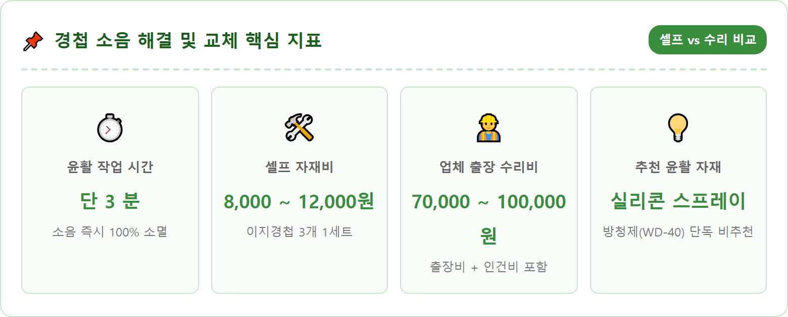
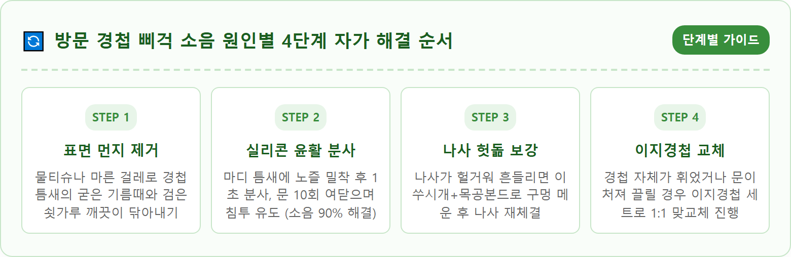
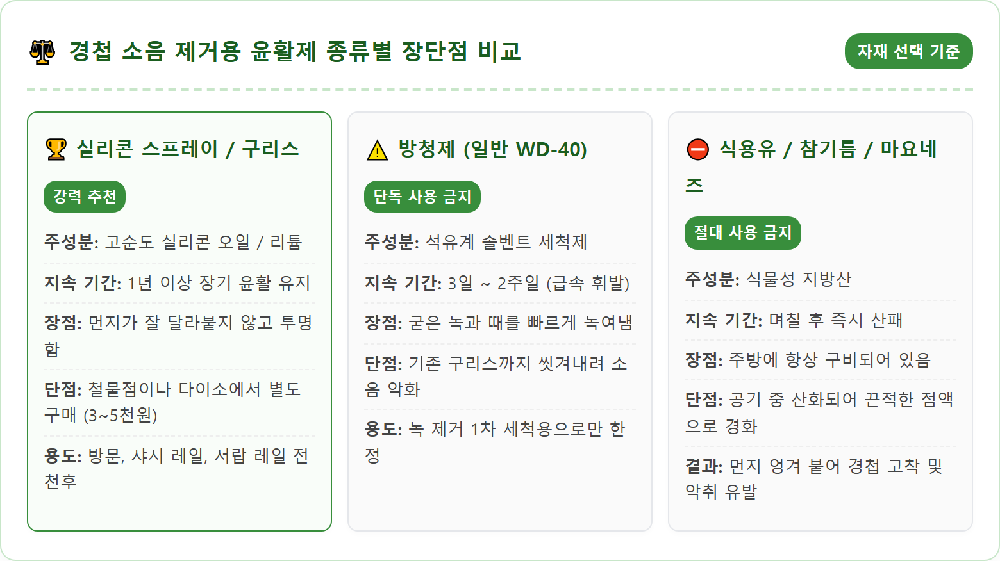
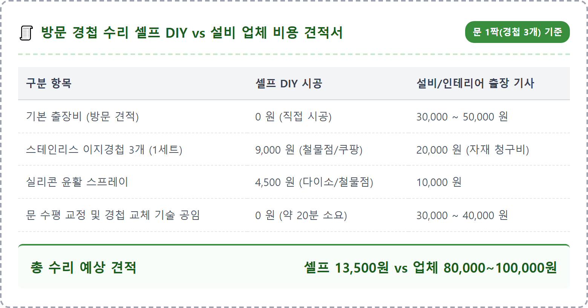
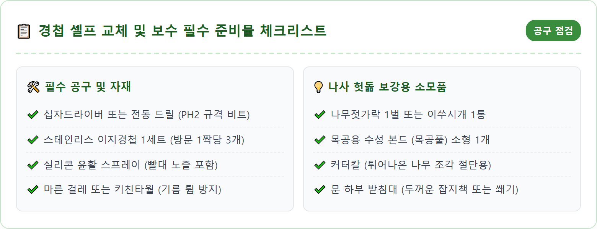
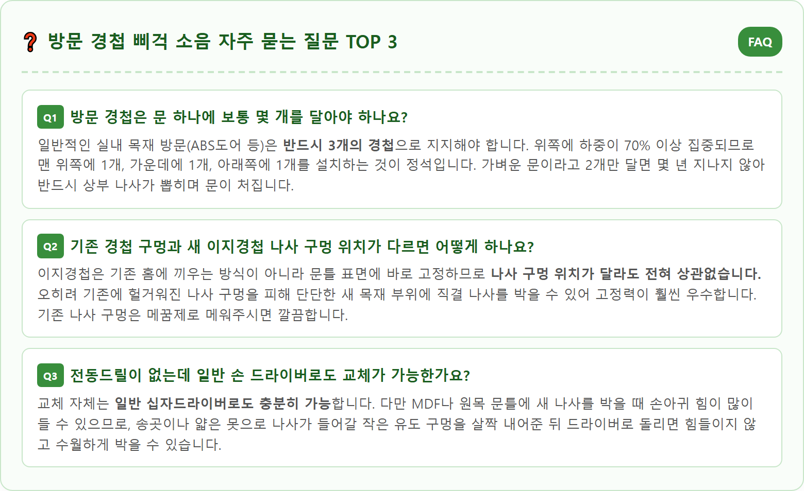

A close-up, high-detail practical DIY home repair photography of a modern stainless steel door hinge mounted on a white wooden interior door frame. A hand holding a can of professional silicone lubricant spray with a precision red straw nozzle, spraying a tiny amount of clear lubricant directly into the top pin seam of the door hinge. Tiny drops of clean lubricant penetrating the hinge joint. Clean modern interior lighting, sharp focus on the metallic hinge texture and screws, realistic home maintenance context, photorealistic 8k quality, 1:1 aspect ratio.






| 구분 | 세부 요약 안내 |
|---|---|
| 주요 원인 | 경첩 축 핀 윤활유 증발, 먼지 마찰, 나사 풀림으로 인한 유격 |
| 추천 자재 | 실리콘 윤활 스프레이, 백색 리튬 구리스, 102mm 스테인리스 이지경첩 |
| 절대 금지 자재 | 식용유·참기름(산패 경화), 일반 WD-40 단독 사용(급속 휘발) |
| 나사 헛돎 처방 | 구멍 속에 목공본드 바른 이쑤시개/나무젓가락 삽입 후 나사 재체결 |
| 셀프 비용 | 윤활 스프레이(3~5천 원), 이지경첩 3개 1세트(8~12천 원) |
| 업체 출장 비용 | 기본 출장비 3~5만 원 + 공임 3~4만 원 (문 1짝당 7~10만 원 선) |
| 소요 시간 | 윤활 작업 3분 / 경첩 1:1 순차 교체 20분 내외 |